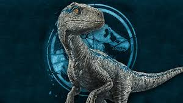

Velociraptor (del latín, 'ladrón veloz') es un género de dinosaurios terópodos dromeosáuridos que vivieron durante el Campaniaense, hacia finales del período Cretácico, hace unos 75 a 71 millones de años, en lo que es hoy Asia. Tradicionalmente solo se ha reconocido a una especie, V. mongoliensis, cuyos fósiles se han hallado en Asia Central, en Mongolia, pero una segunda especie, V. osmolskae, fue nombrada en 2008 a partir de material craneal procedente de Mongolia Interior, en China

 DINOSAURIOS JURASSIC WORLD
DINOSAURIOS JURASSIC WORLD